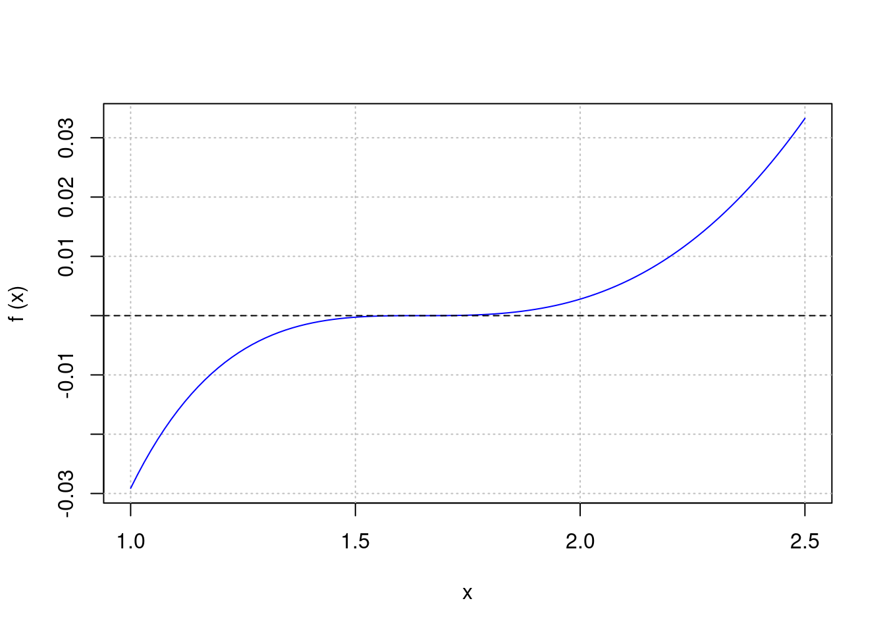

f6 <- function(x) (x-1)*exp(-9*x) + x^9
brentDekker(f6, -1.4, 1.0)$root
[1] 0.5367417
$f.root
[1] 4.844215e-16
$f.calls
[1] 15
$estim.prec
[1] 1.010156e-09Univariate roots
Brent-Dekker; Ridders’ method; bisection, secant and regula-falsi; Newton-Raphson; and Haley
Special aspects
Quadratic roots; find all roots; high-accuracy roots; roots as fixed points
Complex roots
Muller’s and Laguerre’s method
Polynomial roots
Roots as eigenvalues; multiple roots; degree 100 example
Multivariate function roots
Gauss-Newton; Broyden; Newton for systems
Appendix: Test functions
The basic routine for finding roots of univariate (i.e., one-dimensional) functions in Base R is uniroot which realizes the well-known Brent-Dekker method (implemented in C). It is an iterative state-of-the-art algorithm that combines bisection and quadratic interpolation.
The user should be aware of the following restriction:
NOTE: The default tolerance in uniroot is too weak, we would recommend to always set tol = 1e-08 at least.
In ‘pracma’, two variants of Brent-Dekker are implemented in the functions brentDekker (alias brent) resp. fzero. brentDekker requires an interval to search in while fzero asks for an ‘initial guess’. That may help to avoid zeros you are not interested in.
Both are kind of “demo” implementations and are not really recommended.
f6 <- function(x) (x-1)*exp(-9*x) + x^9
brentDekker(f6, -1.4, 1.0)$root
[1] 0.5367417
$f.root
[1] 4.844215e-16
$f.calls
[1] 15
$estim.prec
[1] 1.010156e-09What is really recommended is Ridders’ method, available in ‘pracma’ through the ridders function. This routine combines a ‘regula-falsi’ approach with successively approximating the function through exponentials. riddersis fast (faster than uniroot, though written in pure R).
ridders(f6, -1.4, 1.0, tol= 1e-08)$root
[1] 0.5367417
$f.root
[1] -6.938894e-18
$niter
[1] 18
$estim.prec
[1] 9.026113e-14The Numerical Recipes state explicitely: “Ridders’ root finding method is a powerful variant of ‘regula falsi’ (and ‘false position’). In reliability and speed, this method is competitive with Brent-Dekker and similar approaches.”
There are three more “demo implementations” – bisect, secant, and regulaFalsi – that do exactly what their names suggest. The user is invited to look at the code; especially bisect is simple and quite accurate.
“Regula Falsi” is a combination of the Bisection and Secant methods and will most of the time give better results than both of them.
Brent-Dekker and similar methods rely on the fact that the function has different signs at the ends of the interval (and thus on the “intermediate value theorem” of mathematical analysis). They are not working for functions that barely touch the x-axis. In this case, Newton’s method (historically correct it should be called “Simpson’s method”) may be appropriate.
Newton’s method (aka the Newton-Raphson method) follows the gradient of the function in direction to the x-axis. If the function is (continuously) differentiable and the starting point has been chosen near enough to the root, it will find the root very fast, but it can also be lead us far away if this starting point is not chosen carefully.
In ‘pracma’ Newton’s/Simpson’s method is implemented as newtonRaphson with alias newton.
f <- function(x) sin(x)^2
newtonRaphson(f, 2.0)$root
[1] 3.141593
$f.root
[1] 3.414839e-17
$niter
[1] 24
$estim.prec
[1] 5.843663e-09Quadratic (and higher-order roots) roots are zeros where the function just touches the x-axis without crossing it. Therefore, Brent-Dekker and similar approaches cannot be applied.
In such cases, Newton’s method may be your best choice, but a reliable starting point is to be known. The findzeros routine discussed in the following section may be a good way to find such a value.
fab <- function(x, a, b) x^a - b
newton(fab, 1.0, a = 100, b = 2)$root
[1] 1.006956
$f.root
[1] 1.474376e-13
$niter
[1] 5
$estim.prec
[1] 3.34926e-09It computes the a-th root of b, here the 100th root of 2.0. Be careful with the input values (e.g., \(b > 0\)).
We have seen that root finding methods stop after having found a first zero in a given interval. uniroot.all in package ‘rootsolve’ finds all simple roots, but fails to find quadratic and higher-order roots (where the function does not cross the x-axis).
Here the function findzeros comes to rescue: It finds all roots that at least are a certain ‘tolerance’ apart – by splitting the interval in smaller intervals and applying a combination of Brent-Dekker and Newton’s method.
f <- function(x) x * sin(pi*x)
findzeros(f, -2, 2)[1] -2 -1 0 1 2If the function values at endpoints of a subinterval are both positive or negative, the minimum or maximum will be determined and checked for a possible zero. The endpoints will be tested separately.
Sometimes it is necessary to determine a root with high accuracy. Take the test function f12 that is extremely flat around the root between 1 and 2.
f12 <- function(x)
log(x) + x^2/(2*exp(1)) - 2 * x/sqrt(exp(1)) + 1
fplot(f12, c(1.0, 2.5))
abline(h = 0.0, lty = 2)
Different root finders will give different results like
uniroot | 1.6487 07674 | tol = 1e-15 used for all
bisect | 1.6487 07057 |
regulaFalsi | 1.6487 11081 |
ridders | 1.6487 13958 |
brentDekker | 1.6487 37933 |
fzero | 1.6487 13285 | starting point 2.2
newtonRaphson | 1.6487 09082 | with exact derivative
ridders+Rmpfr | 1.6487 21270 | prec = 128 bits
TRUE value | 1.6487 21271 | sqrt(exp(1))Instead we will use multiple-precision arithmetic with the ‘Rmpfr’ package. ridders is compatible with “big floats”, but we need to strengthen our function f12 to correctly handle multiple precision numbers.
m1 <- Rmpfr::mpfr(1.0, 128)
f12a <- function(x)
log(x) + x^2/(2*exp(m1)) - 2 * x/sqrt(exp(m1)) + 1
ridders(f12a, 1, 3.4)$root1 'mpfr' number of precision 128 bits
[1] 1.648721270699944708468219129114373800688We can see in the table above that now we get the result accurate up to \(10^{-10}\) (or ten digits).
TO BE DONE
Determining roots of complex functions cannot be done with the functions presented above. Two alternatives, both unsatisfying but sometimes helpful, are:
Given a function \(f: \mathbb{C} \to \mathbb{C}\), it can be redefined as a function \(F: \mathbb{R}^2 \to \mathbb{R}^2\) by splitting it into real and imaginary parts. Then a 2-dimensional version of Newton’s method can be applied, see below the section on “Multivariate function roots”.
One can instead look at the function \(F(x, y) = |f(x + iy)|\) and try to identify the minima where \(F(x,y) = 0\), applying an optimization solver (with appropriate starting points).
‘pracma’ contains two routines to find roots of complex functions (of one variable), Mullers root finding method and Laguerre’s method for finding roots of complex polynomials.
Muller’s root finding method, similar to the secant method, uses a parabola through three points for approximating the curve. It needs three points that should enclose the assumed root.
Let’s calculate the first zero of Riemann’s Zeta function on the “critical line” (which is \(z0 = 14.13472514173469379...\)).
fz <- pracma::zeta
z0 <-muller(fz, 0.25+10i, 0.75+10i, 15i)
print(z0$root, digits = 16)[1] 0.5+14.13472514173469iWith Muller’s method one can search for complex zeros by systematically covering the area concerned with triangles.
Laguerre’s method is a root finding method tailored for polynomials and applies to complex polynomials and compex roots. We will look at the polynomial
\[ x^2 - 5.4\ x^4 + 14.45\ x^3 - 32.292\ x^2 + 47.25\ x - 26.46 \]
that has roots \(\pm \sqrt{-5}\), \(2.1\) (twofold), and \(1.2\).
p5 <- c(1.0, -5.4, 14.45, -32.292, 47.25, -26.46)
laguerre(p, 1) #=> 1.2
laguerre(p, 2) #=> 2.099987 (should be 2.1)
laguerre(p, 2i) #=> 0+2.236068i (+- 2.2361i, i.e sqrt(-5))Computations are carried out in complex arithmetic, and it is possible to obtain a complex root even if the starting estimate is real.
Base R has the function polyroot that implements the Jenkins-Traub algorithm. It finds proper roots on by one and decreases the order of the polynomial by deflating it (i.e., dividing by a root term).
Then there is package ‘polynomF’ for handling of polynomials. solve.polynom(p, q) will solve polynomial equations \(p(x) = q(x)\) where p and q have to be defined as of class polynom.
In ‘pracma’ polynomials are represented as vectors of their coefficients, starting with the highest monomial (see the chapter on polynomials in the handbook). Thus, the vector c(1,2,3,4,5) will represent the polynomial \(x^4 + 2x^3 + 3x^2 + 4x + 5\).
One standard approach to find all roots of a polynomial is to calculate the eigenvalues of the so-called companion matrix. In general this works quite well and is accurate enough for most applications. In ‘pracma’ this is implemented as function roots.
As an example find the roots of \((x+2)(x+1)(x-1)(x-2)\) (which are -2, -1, 1, 2, obviously).
p = Poly(c(-2,-1,1, 2)) # x^5 - 5 x^3 + 4
roots(p)[1] -2 2 -1 1roots will also solve polynomials with complex coefficients, for example here we find solutions to \(x^2 - i = 0\):
p = c(1, 0, -1i)
roots(p)[1] 0.7071068+0.7071068i -0.7071068-0.7071068iIn general the results of polyroot and roots are identical. But there are types of polynomials for which the results (of both) are unsatisfactory, for instance the “Wilkinson polynomial”.
Another problem are multiple roots. If several multiple roots or roots with higher orders are present, the results become unbearable (for polyroot and roots). In this case the polyroots function attempts to refine the results of roots.
p <- c(1,0,-4,0,6,0,-4,0,1,0,0) # x^10 - 4x^8 + 6x^6 - 4x^4 + x^2
roots(p) [1] 0.0000000+0.0000000i 0.0000000+0.0000000i 1.0000783+0.0000000i
[4] -1.0000633+0.0000633i -1.0000633-0.0000633i 1.0000000+0.0000783i
[7] 1.0000000-0.0000783i -0.9999367+0.0000633i -0.9999367-0.0000633i
[10] 0.9999217+0.0000000iThese are not very accurate roots. You could try to refine one by one, or:
polyroots(p) root mult
1 0 2
2 1 4
3 -1 4The function rootsmult attempts to determine the order of possible roots. As this computation is problematic in double precision, it is only really applicable to integer roots.
rootsmult(p, 1.0)[1] 4It will give a warning if that is x value not a root (in double precision).
We look at an example that has been discussed on R-help a long time ago. Find the root of the following polynomial near \(x = 2\):
\[ x^{100}-2 x^{99}+10 x^{50}+6 x-4000 \]
Using roots will display a beautiful “circle of roots” with on outlier at or near 2.0.
p = numeric(101)
p[1] <- 1; p[2] <- -2; p[51] <- 10; p[100] <- 6; p[101] <- -4000
plot(roots(p), col = 4, pch = 'x', asp = 1,
main = "Roots of a polynomial of order 100")
grid()There appear to be real roots near -1.0, 1.0 and at \(x = 2.0\). Can we verify this? First, take the approximation calculated by roots and apply Newton’s rule to find a good double-precision approximation.
x0 <- Re(roots(p)[1])
x1 <- x0 - polyval(p, x0)/polyval(polyder(p), x0)
print(x0, digits = 16)[1] 1.999999999999979print(x1, digits = 16)[1] 1.999999999999982Laguerre’s method applied at -1.075 gives us the same value as roots(p)[100]. (Applied at 1.0 it will return the other root near 2.0.)
x1 <- laguerre(p, -1.075)
print(x1, digits = 10)[1] -1.074126672To see if there is a real root near +1.0, we enclose it with Muller’s method.
fp <- function(x) polyval(p, x)
muller(fp, 1.0, 1.05, 1.1)$root[1] 1.074658+0.172133iSo there is no real root around 1.0, the two roots found are the only real roots. (This could be verified with Steiner’s rule.)
NOTE: None of the root finding routines mentioned above will come close to this result in accuracy (except, maybe, bisect). It is suggested to always handle roots of polynomials specially.
There are no routines in Base R for determining roots of function \(F: \mathbb{R}^m \to \mathbb{R}^n\) for \(m, n \ge 2\), that is of “systems of nonlinear equations”. In textbooks two approaches are mentioned Gauss-Newton and Broyden, a variant thereof.
The package ‘nleqslv’ provides a careful implementation of these with many options for the function nleqslv. The implementation as multiroot in package ‘rootSolve’ is also very good. It is true that Gauss-Newton approaches will often not find true solutions for higher-dimensional problems.
In ‘pracma’, there is fsolve that applies Gauss-Newton for systems \(F: \mathbb{R}^m \to \mathbb{R}^n\) and Broyden in case \(m = n\). Please note that for Gauss-Newton the same reservations are valid as for Newton in the one-dimensional case (i.e., the starting point has to be chosen carefully).
We solve the following complex equation
\[ \sin^2(z) + \sqrt{z} - \log(z) = 0 \]
by splitting in real and imaginary parts and constructing a function F from \(\mathbb{R}^2\) to \(\mathbb{R}^2\).
F <- function(p) {
z <- p[1] + p[2]*1i
fz <- sin(z)^2 + sqrt(z) - log(z)
return( c(Re(fz), Im(fz)) )
}
fsolve(F, c(1, 1))$x
[1] 0.2555197 0.8948303
$fval
[1] -4.849507e-10 -5.435474e-10that is, \(0.2555197 + 0.8948303i\) is a solution (there are more). Calling gaussNewton(c(1, 1), F) or broyden(F, c(1, 1)) directly would give us more information about accuracy and number of iterations.
There is also the newtonsys routine that applies the pure Newton method to systems of nonlinear function with \(m = n\); it may be faster, but less stable and reliable.
newtonsys(F, c(1, 1))$zero
[1] 0.2555197 0.8948303
$fnorm
[1] 4.236705e-16
$niter
[1] 8All these routines can be provided with the Jacobian as an input argument. This is only useful if an exact, i.e. symbolic, Jacobian ist known.
f1 <- function(x) # [0, 1.2], 0.399 422 2917
x^2 * (x^2/3 + sqrt(2)*sin(x)) - sqrt(3)/18
f2 <- function(x) 11*x^11 - 1 # [0.4, 1.6], 0.804 133 0975
f3 <- function(x) 35*x^35 - 1 # [-0.5, 1.9], 0.903 407 6632
f4 <- function(x) # [-0.5, 0.7], 0.077 014 24135
2*(x*exp(-9) - exp(-9*x)) + 1
f5 <- function(x) x^2 - (1 - x)^9 # [-1.4, 1], 0.259 204 4937
f6 <- function(x) (x-1)*exp(-9*x) + x^9 # [-0.8, 1.6], 0.536 741 6626
f7 <- function(x) x^2 + sin(x/9) - 1/4 # [-0.5, 1.9], 0.4475417621
f8 <- function(x) 1/8 * (9 - 1/x) # [0.001, 1.201], 0.111 111 1111
f9 <- function(x) tan(x) - x - 0.0463025 # [-0.9, 1.5], 0.500 000 0340
f10 <- function(x) # [0.4, 1], 0.679 808 9215
x^2 + x*sin(sqrt(75)*x) - 0.2
f11 <- function(x) x^9 + 0.0001 # [-1.2, 0], -0.359 381 3664
f12 <- function(x) # [1, 3.4], 1.648 721 27070
log(x) + x^2/(2*exp(1)) - 2 * x/sqrt(exp(1)) + 1